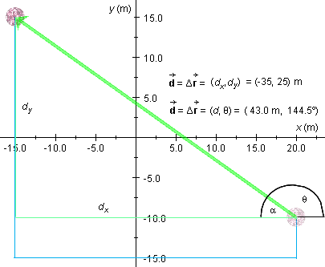

i = (20,-10) m,f = (-15,15) m.
i = (20,-10) m,f = (-15,15) m.Exercise 5 under Activities asks you to
i = (20,-10) m,f = (-15,15) m.The following diagram illustrates the situation. The path traveled by the ball is shown in blue, the displacement vector in green.

What is the ball's overall displacement  = D, expressed in x and y components?
= D, expressed in x and y components?
= D = f - i
= (-15, 15) - (20, -10) = (-15-20, 15-(-10)) = (-35, 25) m.